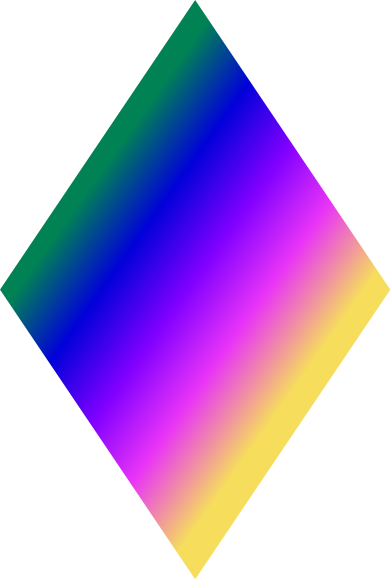

정보보안을 기본으로 둡니다
필요한 정보만 다루고, 개인정보 보호와 안전한 사용을 처음 설계할 때부터 함께 생각합니다.

const message =
justcallmelight_입니다. 일상의 복잡함을 구조화하고, 명확한 인터페이스로 구현합니다.
소개
만드는 태도.제품의 쓸모와 완성도를 먼저 봅니다.
그 가치는 실제 사용에서 확인합니다.
필요한 정보만 다루고, 개인정보 보호와 안전한 사용을 처음 설계할 때부터 함께 생각합니다.
사소한 마찰까지 다듬어, 설명 없이 이해되고 다시 쓰고 싶어지는 UI·UX를 만듭니다.
내가 중요하게 느낀 차이가 사용자에게도 필요한지, 핵심만 만든 MVP를 실제 사용에 놓고 확인합니다.
현재 집중하는 것
시간표처럼 자주 확인하는 정보를 더 빠르고 편안하게 보는 방법을 실험합니다. Tile을 만들며 실제 사용에서 답을 찾고 있습니다.
눈에 띄기 위한 움직임보다, 사용자의 손과 화면 사이가 자연스럽게 이어지는 반응을 좋아합니다.
새로 배운 것은 작은 도구로 구현해 봅니다. 그렇게 쌓인 경험을 다시 다음 문제를 푸는 데 사용합니다.
기술
직접 설계하고 구현하는 기술
LIGHTFRAME. ARCHIVE 01 — 06
배우고, 참여하고, 실제 작업으로 이어온 시간을 모았습니다.
1학년 108명 대상 · 학과당 우수 2명 선발
팀으로 참여해 받은 상
초등학교 졸업 시 수상
인원 · 2명
인원 · 3명
인원 · 1명
인원 · 4명
MOS 자격증
↓ 아래로 스크롤하면 나머지 기록이 이어집니다.